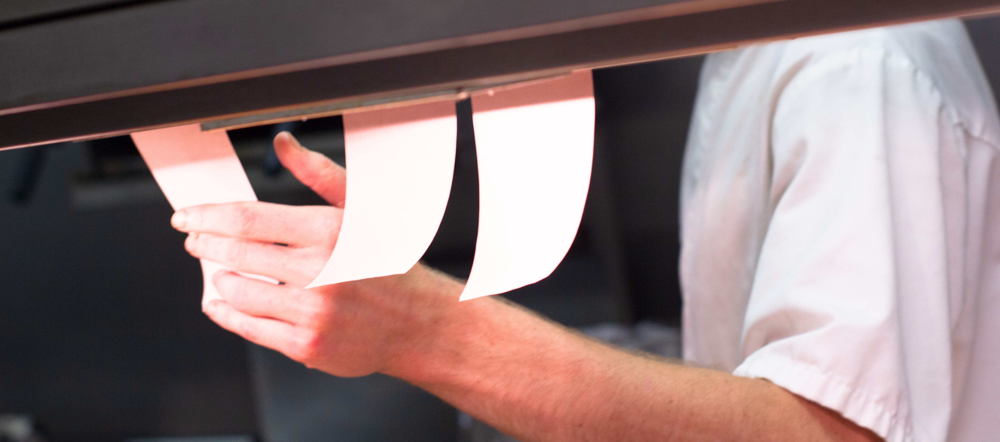

During the COVID pandemic, usage of food delivery apps like Uber Eats, DoorDash, and Grubhub has skyrocketed as people are stuck at home, or at least are now used to ordering in. During this time—especially at the start of the pandemic—many users raised important ethical questions: is it right for me to be using these apps, putting delivery drivers at risk, when I’m trying to avoid getting sick?
The fact is, these apps have long been ethically questionable—long before the pandemic, all the way back since their conception. Why are these apps so fundematically problematic? Let’s take a deep dive into that question.
PART ONE
the beginning
Food delivery apps—and other gig economy apps like Uber and Lyft—are currently trying their best to dodge government legislation like California’s Assembly Bill (AB) 5, which would require them to legally classify their workers as employees rather than independent contractors. (The difference between the two classifications lies in labor and wage policies; for instance, most employers in California need to pay employees for overtime work and provide health insurance).
The apps are instead lobbying for legislation like Proposition (Prop) 22, which sought to exempt them from AB 5 by granting an exception for app-based drivers. After pouring hundreds of millions of dollars into a public campaign to urge Californians to vote in favor of Prop 22, it passed in 2020 with 59% of the vote, although it’s now mired in intense legal battles over its constitutionality.
One of the central tenets of the apps’ argument for policies like Prop 22 is that they are just neutral third parties who simply facilitate connections between drivers, restaurants, and customers. Uber Eats’ website advertises delivery driving jobs to workers with the enticing promise of “being your own boss.” However, this claim is far from reality—in truth, these apps are just another example of a technology with inherent politics; a human-created artifact that establishes a power structure between stakeholders who interact with it. Drivers are in fact not their own bosses—the apps’ algorithms are, as they determine everything from drivers’ work options to their pay rate.
But why are gig economy companies lobbying so hard for these policies in the first place? Why are these apps so desperate to push their narrative and avoid classifying their workers as employees rather than independent contractors?
The short answer: it’s because they’re actually unprofitable, and their business model is unsustainable. Apps like Uber Eats and Doordash have, in their entire existence, never been annually profitable. Never. Their usual profit margin for each order is so low that they’re just being subsidized by venture capital. With investors still hopeful about the promise of growth, companies are desperately competing with each other to establish market dominance and start at least breaking even. To stay afloat, they’re relying on passing the costs of expansion and user acquisition to drivers and restaurants.
This brings us to the big question: should these apps even exist? Is it ethical for these companies to continue trying to grow an unprofitable, unsustainable model that relies on drivers and restaurants shouldering the burdens? Let’s take a look at what those burdens are.
related reading:
PART TWO
the middle
There are many ways to consider the ethics of a situation or decision, but one way is through the ethical lens of justice, which asks if all parties involved are treated fairly, and whether any structural inequities are created or reinforced. Let’s now take a look at the ethical impacts of the gig economy business model on delivery drivers. One of the biggest burdens that delivery drivers have borne arose during the pandemic.
As people sheltered in place during the early stages of the pandemic, usage of food delivery apps skyrocketed. Some of these people raised a question, however: was it ethical to avoid personal risk by instead putting others at risk, just because one had the financial means to do so? There were layers to this question as well—some users reasoned that while it was obviously not ideal that drivers had to expose themselves to COVID, not ordering delivery would put them out of work entirely, creating an arguably worse situation for them.
This was an impossible question for customers, as well as an impossible decision with life-or-death tradeoffs for drivers: should I stay home to protect myself and others, or continue making deliveries even if I’m potentially sick or at risk, because not doing so cost me my livelihood?
But how did this situation become so precarious? Apps’ refusal to provide health insurance for drivers—a cost-cutting decision made legally possible through their dodging of legislation—meant that drivers were left to internalize all of the financial and medical risks on their own.
Even with significant burdens such as these, in the gig economy model, drivers’ benefits are still relatively low. Having to cover their transportation and maintenance costs (like gas, parking, repairs, and insurance) leaves workers with low wages—often lower than what they would make working a traditional delivery job or a similar role, since traditional drivers for restaurants get a minimum wage plus reimbursements for travel costs.
Prop 22, for instance, promises drivers at least 120% of California’s minimum wage rate, but only applies that to drivers’ “engaged time” (when they are actively completing a service request), so factoring all the time and travel in between, drivers end up earning usually much lower than minimum wage. One study found that drivers for ridesharing apps like Uber and Lyft—which operate similarly to food delivery apps—could earn as low as $5.64/hr, which is nearly only one-third of CA’s minimum wage of $15/hr.
Furthermore, black-box wage calculations often rob drivers of pay without an explanation or an effective way to appeal. In 2021, workers in Taiwan held a public demonstration outside of the Ministry of Labor after new salary calculation formulas were deployed by companies like Uber Eats, cutting wages by 10 to 30 percent even as productivity increased.
Even when companies are transparent about their policies, algorithms that maximize delivery efficiency do so at the expense of the safety and wellbeing of delivery drivers. Focusing on guaranteeing super-fast delivery and docking drivers’ pay when they fail to do so—even when delays are caused by factors out of their control, like traffic or longer food preparation times—means that the apps incentivize drivers to drive fast and dangerously, putting themselves and others in unsafe conditions. The salary changes in Taiwan, for instance, exacerbated this problem, increasing the rate of delivery traffic accidents from 1.4 incidents per month to 4 per month.
related reading:
PART THREE
the end
The short answer: it’s because they’re actually unprofitable, and their business model is unsustainable. Apps like Uber Eats and Doordash have, in their entire existence, never been annually profitable. Never. Their usual profit margin for each order is so low that they’re just being subsidized by venture capital. With investors still hopeful about the promise of growth, companies are desperately competing with each other to establish market dominance and start at least breaking even. To stay afloat, they’re relying on passing the costs of expansion and user acquisition to drivers and restaurants.
The short answer: it’s because they’re actually unprofitable, and their business model is unsustainable. Apps like Uber Eats and Doordash have, in their entire existence, never been annually profitable. Never. Their usual profit margin for each order is so low that they’re just being subsidized by venture capital. With investors still hopeful about the promise of growth, companies are desperately competing with each other to establish market dominance and start at least breaking even. To stay afloat, they’re relying on passing the costs of expansion and user acquisition to drivers and restaurants.
The short answer: it’s because they’re actually unprofitable, and their business model is unsustainable. Apps like Uber Eats and Doordash have, in their entire existence, never been annually profitable. Never. Their usual profit margin for each order is so low that they’re just being subsidized by venture capital. With investors still hopeful about the promise of growth, companies are desperately competing with each other to establish market dominance and start at least breaking even. To stay afloat, they’re relying on passing the costs of expansion and user acquisition to drivers and restaurants.
The short answer: it’s because they’re actually unprofitable, and their business model is unsustainable. Apps like Uber Eats and Doordash have, in their entire existence, never been annually profitable. Never. Their usual profit margin for each order is so low that they’re just being subsidized by venture capital. With investors still hopeful about the promise of growth, companies are desperately competing with each other to establish market dominance and start at least breaking even. To stay afloat, they’re relying on passing the costs of expansion and user acquisition to drivers and restaurants.
The short answer: it’s because they’re actually unprofitable, and their business model is unsustainable.
related reading:
During the COVID pandemic, usage of food delivery apps like Uber Eats, DoorDash, and Grubhub has skyrocketed as people are stuck at home, or at least are now used to ordering in. During this time—especially at the start of the pandemic—many users raised important ethical questions: is it right for me to be using these apps, putting delivery drivers at risk, when I’m trying to avoid getting sick?
The fact is, these apps have long been ethically questionable—long before the pandemic, all the way back since their conception. Why are these apps so fundematically problematic? Let’s take a deep dive into that question.